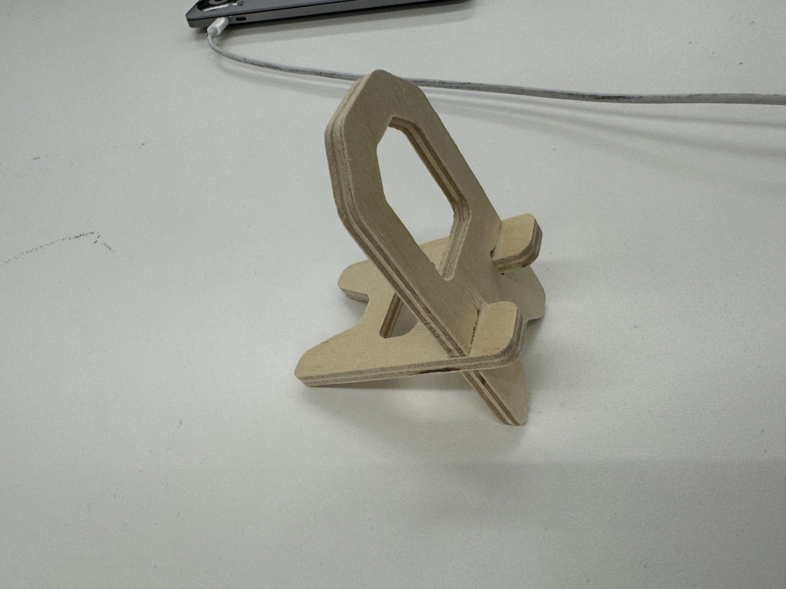
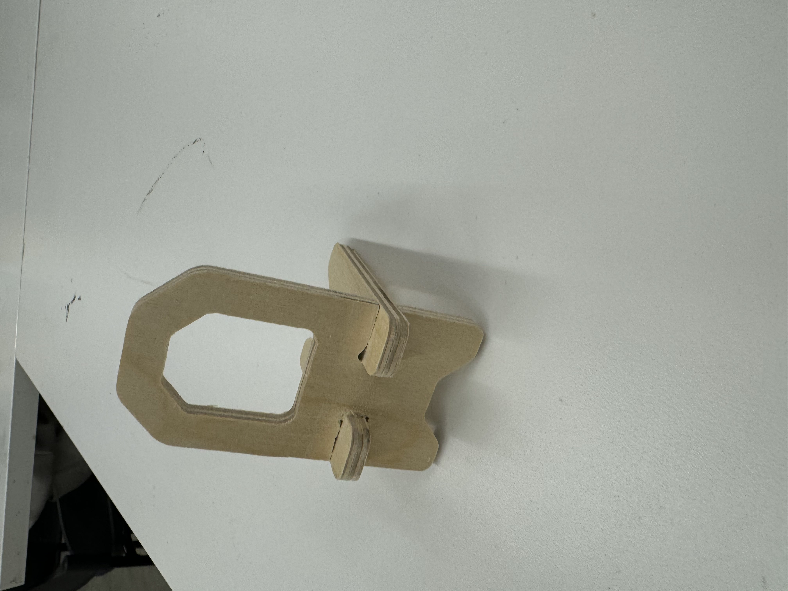
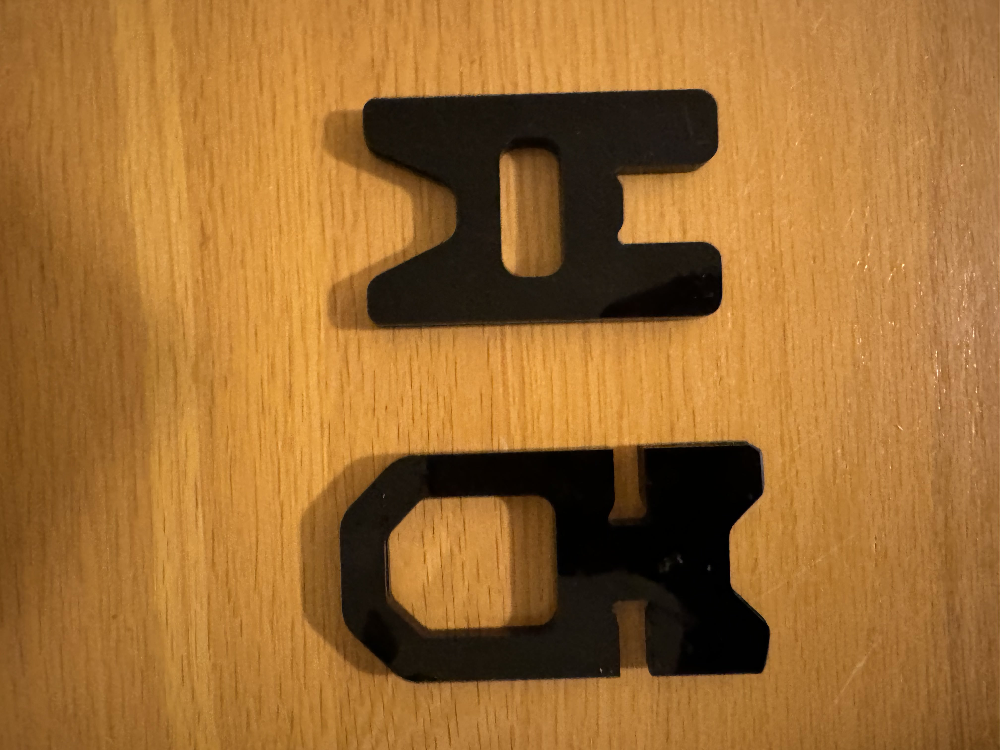
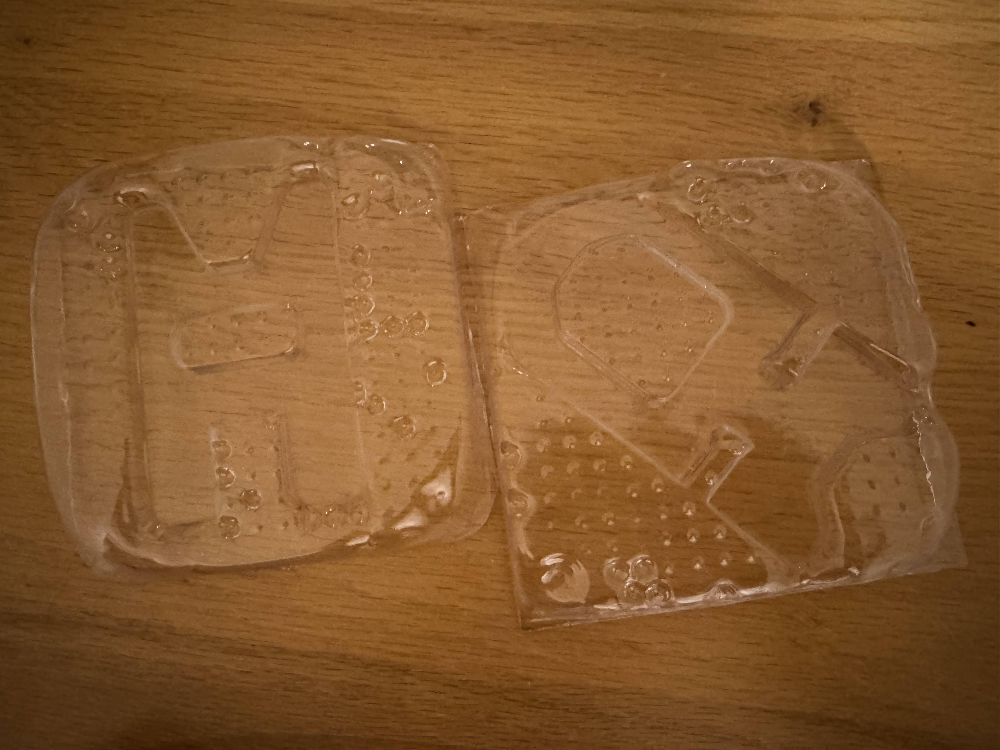

Making something using CNC
 I wasted a lot of time thinking of different ways to build different designs for a laptop stand to improve my posture but then I realized it might be a pain in the ass to potentially waste so much material and I definitely don't need to make more garbage, so I decided making an iPhone stand would be easier. Say I'm on facetime or watching a show--lots of reasons to prop it up, and I don't want one of those phone clip-things.
I wasted a lot of time thinking of different ways to build different designs for a laptop stand to improve my posture but then I realized it might be a pain in the ass to potentially waste so much material and I definitely don't need to make more garbage, so I decided making an iPhone stand would be easier. Say I'm on facetime or watching a show--lots of reasons to prop it up, and I don't want one of those phone clip-things.
I saw some designs online that I thought seemed pretty easy to rip off. I worked backwards by measuring the width of the scrap wood I would use to CNC, then added a couple millimeter's wiggle-room in the slot where I would shove the pieces together. It took a couple of tries to cut because I didn't realize that the order of cuts you put in Aspire matters i.e. you need to manually cut the inner sections first, or else your part is involuntarily converted into a ballerina on the drill bit. Luckily, with some aid from Bobby, I was able to get the parts as desired. I filed the edges down to get a nice smooth surface. Then it snapped together pretty nicely! Unfortunately, the wood is quite lightweight so the phone needs to be set on it delicately otherwise the whole complex topples. Can't win em all.



I wasted a lot of time thinking of different ways to build different designs for a laptop stand to improve my posture but then I realized it might be a pain in the ass to potentially waste so much material and I definitely don't need to make more garbage, so I decided making an iPhone stand would be easier. Say I'm on facetime or watching a show--lots of reasons to prop it up, and I don't want one of those phone clip-things.Then I had to do the post-processing. Since I had two pretty flat pieces. I figured this would be pretty easy to vacuum form and then mold. I again enlisted Bobby's supervision, and then it was relatively smooth sailing. I actually lasercut a new version of this (because I am lazy and left the original one at home) and performed vacuum molding on the acrylic, but it's the same end result. Sue me.
